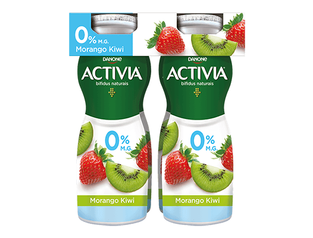
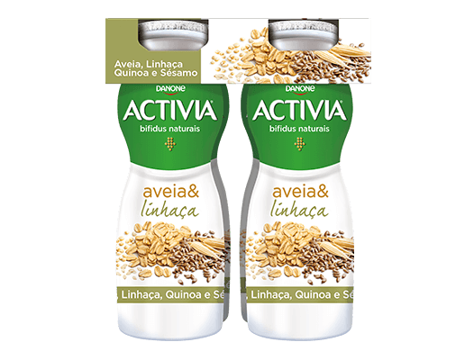
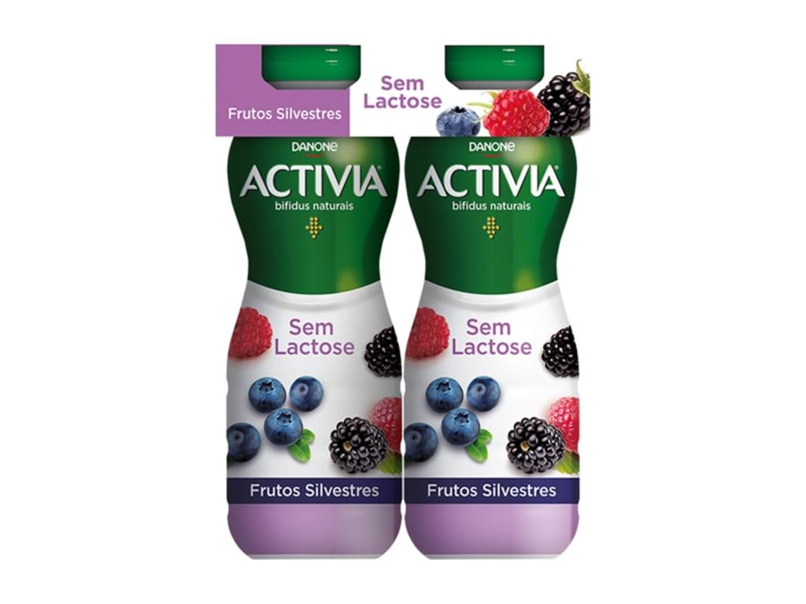

Bem-vindo ao mundo dos iogurtes modernos!
Aqui você encontrará os iogurtes mais deliciosos e saudáveis, com uma grande variedade de sabores e opções sem lactose.
Iogurte de frutas
Iogurte feito com frutas frescas e naturais, sem conservantes ou corantes artificiais.
Sabor: Morango, kiwi.
Ingredientes: Iogurte natural, frutas frescas, açúcar demerara.
Iogurte de cereais
Iogurte cremoso com cereais crocantes, perfeito para um café da manhã saudável e saboroso.
Sabor: Aveia, linhaça.
Ingredientes: Iogurte natural, cereais integrais, açúcar demerara.
Iogurte sem lactose
Iogurte delicioso e saudável, sem lactose, perfeito para quem tem intolerância à lactose ou prefere uma opção sem laticínios .
Sabor: Natural, frutas vermelhas.
Ingredientes: Leite sem lactose, fermento lácteo, açúcar demerara.